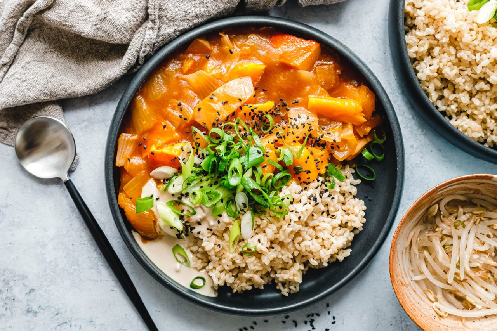

Geschmorter Kürbis mit Miso und Tahin-Knoblauch-Dressing

Kürbis mit Miso? Und Tahin-Knoblauch-Dressing? Nicht unbedingt die
naheliegendste Zutatenkombination. Das Ergebnis überzeugt aber auf voller
Linie als schnelles Herbstgericht voller Umami, wenn es mal etwas anderes
als Kürbissuppe sein soll.